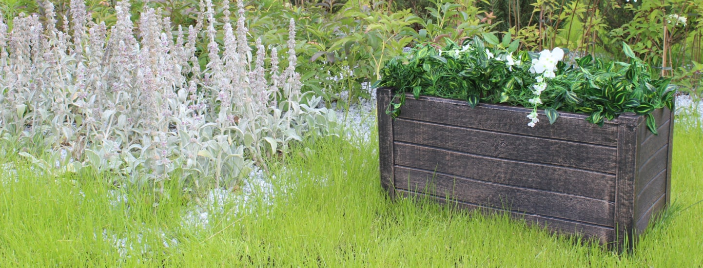
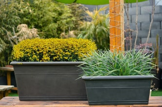

Эксклюзивный поставщик и официальный дистрибьютор продуктов GreenShip
(Китай) и ROTO (Сербия) в РФ


 Хиты продаж
Хиты продаж Новинки
Новинки

Контейнерное озеленение.
Контейнерное озеленение — доступный способ создания цветочных, хвойных или декоративно-лиственных композиций из однолетних или многолетних растений. В этой статье мы поговорим о том, почему стоит обратить внимание на такой способ озеленения, как выбрать подходящую ёмкость и как правильно ухаживать за растениями в кадках, а также про способы зимовки и сохранения растений на следующий сезон.
Начнем с того почему контейнерное озеленение становится таким популярным:
- можно озеленить небольшие пространства;
- появляется возможность посадить растения там, где нет открытого грунта: бетонная площадка, парковка, лестница, терраса и тд;
- контейнеры с растениями могут служить ширмой и делить пространство на зоны;
- вазоны можно менять местами и создавать новые композиции;
- можно подчеркнуть стиль дома или скрыть неприглядные места;
- есть возможность выращивать растения, которые не зимуют в открытом грунте в вашем регионе;
- озеленение можно проводить не только горизонтальное, но и вертикальное, используя пространство по-полной.
Как выбрать контейнер?
Для начала нужно определиться с размером ёмкости, её дизайном, формой, а также материалом.Подбирайте контейнер под размер растения — если культура обладает компактной корневой системой, то лучше выбрать более широкий и невысокий горшок. Обычно к таким растениям относятся травянистые многолетние и однолетние растения.
Если же в ваших планах посадить кустарник или даже дерево, то высаживайте его в глубокую ёмкость с высокими стенками. Обязательно предусмотрите устойчивость контейнера, чтобы от сильных порывов ветра он не упал вместе с растением.
Форма и дизайн контейнера зависят от общей задумки сада. На рынке сейчас представлено огромное разнообразие: квадратные, прямоугольные, полусферы, из натуральных или композитных материалов.
Выбирайте растения для контейнеров правильно: чтобы не приходилось тратить много времени на уход за ними.
Обязательно грамотно сочетайте кашпо с основными посадками и композициями на участке и добавляйте изюминку в ваш сад!

Меры по зимовке
Храните теплолюбивые растения дома или в зимнем саду. Если вы выращиваете растения из тропиков в контейнерах, то на время зимы их нужно будет перенести в теплые условия и ухаживать как за комнатными.
Храните растения в непромерзаемом помещении. Если посаженные растения из регионов с умеренным климатом, то в этом случае нужно обеспечить им период покоя. К таким растениям относятся: крупнолистная гортензия, хосты, розы, спирея, пионы и тд. Зимовать такие растения должны в прохладном непромерзаемом сухом помещении.После того как растения перейдут в состояние покоя: у травянистых многолетников отмирает наземная часть, а древесно-лиственные сбрасывают листву, их нужно полить и переместить горшки в прохладный подвал или утепленный гараж. Температура в этих помещениях должна быть в пределах 0-7 градусов Цельсия. Обязательно проверяйте ваши растения и поливайте их по мере необходимости: обычно раз в месяц. Не нужно допускать полного пересыхания грунта в горшке. Весной, когда начнут набухать почки, перенесите горшки с растениями в светлое место: утепленная веранда или балкон. С потеплением вынесите контейнеры на открытый воздух.